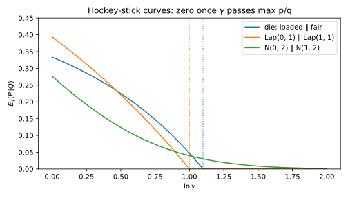

3 Divergences
3.1 Why this matters
How far is a fitted model from the truth? How many samples reveal a drift? Later parts ask the same about an algorithm’s outputs on two different inputs. Each time you need one number for how different two distributions \(P\) and \(Q\) are, and there are several candidates because there are several questions.
All of them summarize the likelihood ratio \(r(x) = p(x)/q(x)\), how many times more likely an outcome is under \(P\) than under \(Q\); its logarithm \(L(x) = \ln r(x)\) is the evidence for \(P\), in nats. The running example is a die, fair (\(Q\)) or loaded so that a six comes up half the time (\(P\)). A six has \(r = 0.5/(1/6) = 3\); any other roll has \(r = 0.1/(1/6) = 0.6\).
3.2 KL divergence
Roll the loaded die many times and add up the evidence \(\sum_i\ln r(x_i)\). Sixes are frequent, so the sum drifts upward. That rate, the average evidence per observation from \(P\), is the Kullback–Leibler (KL) divergence, \[D_{\mathrm{KL}}(P\|Q) = \mathbb E_P\left[\ln\frac{p(X)}{q(X)}\right] = \sum_x p(x)\ln\frac{p(x)}{q(x)}. \tag{3.1}\] Independent observations multiply their likelihoods, so their evidence adds: \(n\) samples carry \(n\) times the KL of one. And since the drift grows like \(n\) while its fluctuation grows like \(\sqrt n\), telling the two apart takes on the order of \(1/\mathrm{KL}\) samples. For the die, \(D_{\mathrm{KL}}(P\|Q) = 0.2939\) per roll.
KL is never negative and is zero only when \(P = Q\), but it averages over its first argument, so it is asymmetric. The fair die proves its innocence more slowly, \(D_{\mathrm{KL}}(Q\|P) = 0.2426\), because its evidence is the absence of sixes.
The direction also shapes fitted models. Maximum likelihood minimizes the forward KL, averaged over the data, so wherever the data go and the model has almost no mass, \(\ln(p/q)\) explodes: the fit must cover everything. Variational inference minimizes the reverse KL, averaged over the model, which only punishes mass where the data aren’t. Fitting one Gaussian to two separated bumps, the forward fit spreads over both and the reverse fit locks onto one; the second has forward KL 15.307, against 0.724 for the first. If \(Q\) gives zero probability to anything \(P\) can produce, that outcome is infinite evidence and KL is infinite.
For two normals with the same variance and means \(\mu\) standard deviations apart, \(D_{\mathrm{KL}} = \mu^2/2\); for \(\mathrm{Lap}(0, b)\) against \(\mathrm{Lap}(s, b)\), with \(t = s/b\), \(D_{\mathrm{KL}} = t + e^{-t} - 1\). The normal’s is quadratic in the shift, which is why small drifts need many samples.
3.3 Rényi divergence and the worst case
KL is the average of \(\ln r\), so \(e^{D_{\mathrm{KL}}}\) is the geometric mean of \(r\). Other means weight large ratios more: for the die under \(P\), the geometric mean is 1.3416, the arithmetic mean 1.8000, the largest value 3.0000. The Rényi divergence of order \(\alpha\) is the logarithm of the power mean of \(r\) with exponent \(\alpha - 1\): for \(\alpha > 0\), \(\alpha \ne 1\), \[D_\alpha(P\|Q) = \frac{1}{\alpha - 1}\ln\mathbb E_Q\big[r^\alpha\big] = \frac{1}{\alpha - 1}\ln\sum_x p(x)^\alpha q(x)^{1-\alpha}. \tag{3.2}\] The order is a dial: \(\alpha \to 1\) gives KL, larger \(\alpha\) weighs large ratios more, so \(D_\alpha\) never decreases, and \(\alpha \to \infty\) gives the max-divergence \(D_\infty(P\|Q) = \ln\max_x r(x)\), the largest log ratio \(\ln P(A)/Q(A)\) of any event. Every order adds over samples.
The normal pair’s log ratio is a straight line, so higher orders keep finding larger ratios further out: \(D_\alpha = \alpha\mu^2/2\) and \(D_\infty = \infty\). The Laplace pair’s is capped at \(t\), so \(D_\alpha\) levels off at \(D_\infty = t\): \[D_\alpha(P\|Q) = \frac{1}{\alpha - 1}\ln\left(\frac{\alpha}{2\alpha - 1}e^{(\alpha - 1)t} + \frac{\alpha - 1}{2\alpha - 1}e^{-\alpha t}\right) \qquad (\alpha \ne \tfrac12, 1). \tag{3.3}\] At equal variance, the Laplace pair is further apart at low orders, because its sharp peak moves visibly, and the normal pair above order 2.98, where its unbounded tail takes over (Table 3.1, Figure 3.1). “More different” must name the order.
| KL | \(D_{0.5}\) | \(D_2\) | \(D_{10}\) | \(D_\infty\) | |
|---|---|---|---|---|---|
| Laplace, \(t = 1\) | 0.3679 | 0.1891 | 0.6191 | 0.9287 | 1.0000 |
| Normal, same variance | 0.2500 | 0.1250 | 0.5000 | 2.5000 | \(\infty\) |

Unbounded is not frequent, and Rényi divergences say how rare large evidence is, which an average cannot. Markov’s inequality applied to \(r^\alpha\), whose \(Q\)-average is what \(D_\alpha\) measures, gives for any \(\alpha > 0\) \[Q[L \ge c] \le \exp\big(-\alpha c + (\alpha - 1)D_\alpha(P\|Q)\big). \tag{3.4}\] For the normal pair with \(\mu = 1\), a draw from \(Q\) gives at least 2 nats of evidence for \(P\) with probability 0.0062. The bound gives 0.1353 at \(\alpha = 1\), valid for any pair, and 0.0439 at \(\alpha = 2.5\).
3.4 Total variation and the hockey-stick divergence
Draw \(p\) and \(q\) on the same axes. Where they overlap, an observation can’t tell you which one produced it. Total variation (TV) is the mass that doesn’t overlap: \[\mathrm{TV}(P, Q) = \max_A|P(A) - Q(A)| = \frac12\sum_x|p(x) - q(x)|. \tag{3.5}\] The best single guess says “\(P\)” exactly where \(p > q\), so with equal priors it is right with probability \(\frac12 + \frac12\mathrm{TV}\), and no classifier does better. The mean of any statistic with values in \([a, b]\) likewise moves by at most \((b - a)\,\mathrm{TV}\). For the normal pair, with \(\Phi\) the standard normal cumulative distribution function (CDF), \(\mathrm{TV} = 2\Phi(\mu/2) - 1\); at \(\mu = 1\) it is 0.3829, so the best guess is right with probability 0.6915.
TV is capped at 1 and does not add over samples. A shift of a tenth of a standard deviation has TV 0.0399 in one sample, yet the best test on 400 samples is right with probability 0.8413. So compute KL or Rényi for \(n\) samples, where they add, and convert at the end (Section 3.5).
TV counts all excess mass, however weak its evidence. To keep only strong evidence, scale \(q\) up by \(\gamma \ge 1\) and measure the mass of \(p\) still above \(\gamma q\), the hockey-stick divergence: \[E_\gamma(P\|Q) = \max_A\big[P(A) - \gamma Q(A)\big] = \sum_x\big(p(x) - \gamma q(x)\big)_+, \tag{3.6}\] with \((y)_+ = \max(y, 0)\). Only outcomes with ratio above \(\gamma\) count, so \(E_1 = \mathrm{TV}\), \(E_\gamma\) falls as \(\gamma\) grows, and it reaches zero at \(\gamma = e^{D_\infty}\). For the die only the six counts, and \(E_\gamma = 0.5 - \gamma/6\) hits zero at \(\gamma = 3\). For the Laplace pair, \(E_\gamma = 1 - e^{-(t - \ln\gamma)/2}\) up to \(\gamma = e^t\), zero beyond. The normal pair never reaches zero, \[E_\gamma = \Phi\Big(\frac\mu2 - \frac{\ln\gamma}\mu\Big) - \gamma\,\Phi\Big(-\frac\mu2 - \frac{\ln\gamma}\mu\Big), \tag{3.7}\] giving \(E_2 = 0.1906\) and \(E_4 = 0.0692\) at \(\mu = 1\) (Figure 3.2): its large ratios exist but carry little mass.

3.5 Data processing and Pinsker’s inequality
Binning, thresholds and added noise map several outcomes to one, and the output’s likelihood ratio is then an average of theirs. Report the die’s parity, and the six (ratio 3) joins the two and four (0.6 each) in an even result with ratio \((3 + 0.6 + 0.6)/3 = 1.4\). Averaging pulls strong evidence toward weak, and a divergence, a convex summary of the ratios, can only shrink. That is the data processing inequality (DPI): if both inputs go through the same channel \(K\), even a randomized one, then \(D(PK\|QK) \le D(P\|Q)\) for KL, TV, \(E_\gamma\), every \(D_\alpha\) and \(D_\infty\), and every f-divergence \(\mathbb E_Q[f(r)]\) with \(f\) convex and \(f(1) = 0\).
Nothing is lost when processing keeps the ratio: parity drops the die’s KL from 0.2939 to 0.0823, while “is it a six?” keeps all of it. Thresholding draws from \(\mathcal N(0, 1)\) or \(\mathcal N(1, 1)\) at the midpoint lowers KL from 0.5 to 0.3090 but keeps all of the TV, since it is the best test. The DPI bounds the best test only: processing can help a bad classifier, never beat the best test on raw data.
Pinsker’s inequality turns the KL you can compute into a bound on the TV you want to report, and Bretagnolle–Huber stays below 1: \[\mathrm{TV} \le \sqrt{\tfrac12D_{\mathrm{KL}}}, \qquad \mathrm{TV} \le \sqrt{1 - e^{-D_{\mathrm{KL}}}}. \tag{3.8}\] Pinsker is tight for nearly equal distributions but passes 1 at KL \(= 2\); Bretagnolle–Huber is better above 1.59 (Table 3.2). There is no converse: a tiny TV is compatible with infinite KL.
| \(n\) | KL of \(n\) samples | Exact TV | Pinsker | Bretagnolle–Huber |
|---|---|---|---|---|
| 100 | 0.50 | 0.3829 | 0.5000 | 0.6273 |
| 400 | 2.00 | 0.6827 | 1.0000 | 0.9299 |
3.6 Code
The closed forms for the two shifted pairs need only the standard library:
from math import erfc, exp, log, sqrt
def normal_cdf(x: float) -> float:
return 0.5 * erfc(-x / sqrt(2))
def gauss_kl(mu: float) -> float:
"""KL between N(0, s^2) and N(mu * s, s^2): half the squared shift in standard deviations."""
return mu**2 / 2
def gauss_tv(mu: float) -> float:
return 2 * normal_cdf(mu / 2) - 1
def gauss_hockey(mu: float, gamma: float) -> float:
"""E_gamma between N(0, 1) and N(mu, 1)."""
c = log(gamma)
return normal_cdf(mu / 2 - c / mu) - gamma * normal_cdf(-mu / 2 - c / mu)
def laplace_kl(t: float) -> float:
"""KL between Lap(0, b) and Lap(t * b, b)."""
return t + exp(-t) - 1
def laplace_renyi(alpha: float, t: float) -> float:
"""Renyi divergence of order alpha (not 1/2 or 1) between Lap(0, b) and Lap(t * b, b)."""
inner = alpha / (2 * alpha - 1) * exp((alpha - 1) * t) + (alpha - 1) / (2 * alpha - 1) * exp(-alpha * t)
return log(inner) / (alpha - 1)
def laplace_tv(t: float) -> float:
return 1 - exp(-t / 2)
print(f"{gauss_kl(1.0):.4f} {gauss_tv(1.0):.4f} {gauss_hockey(1.0, 2.0):.4f}") # 0.5000 0.3829 0.1906
print(f"{laplace_kl(1.0):.4f} {laplace_renyi(2.0, 1.0):.4f} {laplace_tv(1.0):.4f}") # 0.3679 0.6191 0.3935
print(f"{laplace_renyi(10.0, 1.0):.4f}") # 0.9287The full edition’s script, divergences.py, checks every closed form against simulation.
3.7 Cheat sheet
| Divergence | Definition | Normal pair, shift \(\mu\) | Laplace pair, shift \(t\) | Use it for |
|---|---|---|---|---|
| KL | \(\mathbb E_P[\ln r]\) | \(\mu^2/2\) | \(t + e^{-t} - 1\) | Average evidence; sample sizes (\(\approx 1/\mathrm{KL}\)) |
| Rényi \(D_\alpha\) | \(\frac{1}{\alpha-1}\ln\mathbb E_Q[r^\alpha]\) | \(\alpha\mu^2/2\) | Equation 3.3 | From typical to worst-case evidence; tail of \(L\) |
| Max-divergence \(D_\infty\) | \(\ln\max r\) | \(\infty\) | \(t\) | Worst-case ratio over all events |
| TV | \(\frac12\sum\lvert p - q\rvert\) | \(2\Phi(\mu/2) - 1\) | \(1 - e^{-t/2}\) | Best single guess: \(\frac12 + \frac12\mathrm{TV}\) |
| Hockey-stick \(E_\gamma\) | \(\sum(p - \gamma q)_+\) | Equation 3.7 | \(\big(1 - e^{-(t - \ln\gamma)/2}\big)_+\) | Mass of large ratios; $E_1 = $ TV |
Rules of thumb
- Compute in KL or Rényi, where independent samples add; convert to TV at the end.
- A bounded likelihood ratio (Laplace) gives a finite max-divergence; an unbounded one (normal) gives \(D_\infty = \infty\), though for the normal pair every finite order stays finite.
- Processing never increases a divergence.
3.8 Further reading
- van Erven & Harremoës, “Rényi Divergence and Kullback–Leibler Divergence” (IEEE Transactions on Information Theory, 2014): the Rényi family and its properties.
- Cover & Thomas, Elements of Information Theory (2nd ed., 2006), ch. 2 and §11.6: KL and Pinsker’s inequality.
- Polyanskiy & Wu, Information Theory: From Coding to Learning (2025), ch. 7: f-divergences and data processing at reference depth.
Derivations. Every result in this chapter is derived step by step in the full edition’s chapter.